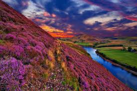

Valley of Flowers- Travel Blog

The Valley of Flowers in Uttarakhand is a UNESCO World Heritage site, known for its vibrant alpine meadows and breathtaking landscapes. Nestled in the Western Himalayas, this trek is a paradise for nature lovers, botanists, and photographers.
Highlights:
- Breathtaking views of rare Himalayan flowers
- Sightings of endangered species like the snow leopard and blue sheep
- Scenic waterfalls and peaceful meadows
- UNESCO World Heritage recognition
Quick Info:
- Start Point: Govindghat
- Distance: ~17 km (one way)
- Difficulty: Moderate
- Best Time to Visit: July–September
Back to Hikes